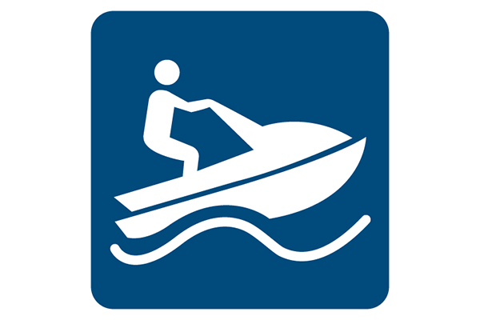
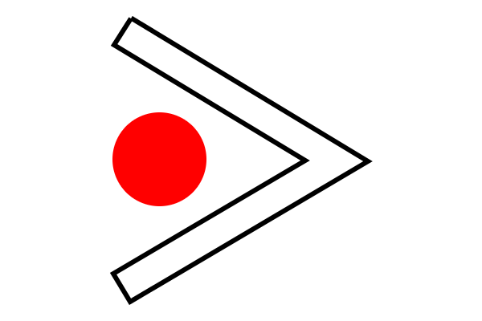
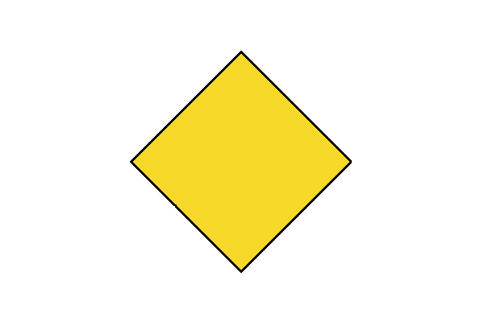
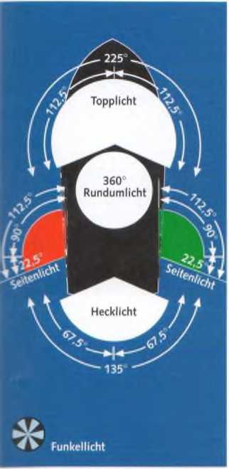
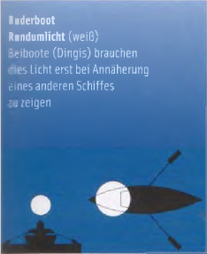
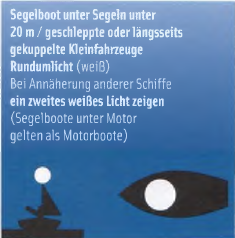
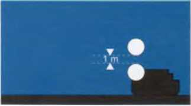

Якорная стоянка запрещена

► Правила судоходства по внутренним водным путям (BinSchStrO) регулируют движение на внутренних водных путях Германии, если там не действуют другие нормативные акты, такие как
► Рейнское полицейское постановление о судоходстве (RheinSchPVO) на Рейне,
► Мозельское полицейское постановление о судоходстве (MoselSchPVO) на Мозеле,
► Дунайское полицейское постановление о судоходстве (DonauSchPVO) на Дунае.
Все они в основном совпадают, но учитывают местные особенности различных речных районов. Некоторые отличия содержит международное
► Правила судоходства по Боденскому озеру (BodenseeSchO).
Кроме того, существуют дополнения для Берлина и различных земельных водоёмов, где действуют постановления отдельных федеральных земель или местных органов власти. Они иногда значительно отличаются друг от друга и здесь не рассматриваются. На всех акваториях могут также действовать правила для водных лыж и/или гидроциклов.
Поэтому перед выходом в незнакомый район плавания необходимо обязательно узнать действующие правила в соответствующих управлениях водных путей и судоходства. Нарушения наказываются штрафами как административные правонарушения.

Правила судоходства по внутренним водным путям (BinSchStrO)
Рейнское полицейское постановление о судоходстве (RheinSchPVO)
Мозельское полицейское постановление о судоходстве (MoselSchPVO)
Дунайское полицейское постановление о судоходстве (DonauSchPVO)
с Правилами движения по Дунаю
Правила судоходства по Боденскому озеру (BodenseeSchO)
Правила морских судоходных путей (SeeSchStrO)
Правила судоходства по внутренним водным путям не различают прогулочные и коммерческие суда. В них используются только понятия «маломерные суда» и «суда».
► Маломерные суда — это лодки на вёслах, под парусом или мотором, амфибийные и воздушно‑подушечные суда, а также суда на подводных крыльях длиной менее 20 метров.
К ним не относятся буксиры, паромы или суда, допущенные к перевозке более 12 пассажиров, толкаемые баржи и плавучие сооружения.
Это определение очень важно, поскольку маломерные суда обязаны уступать дорогу всем судам.
Таким образом, моторная яхта длиной 19,80 м считается маломерным судном и должна уступать любой парусной яхте (менее 20 м) и любой гребной лодке. Моторная яхта длиной 20,10 м, напротив, считается судном, которому должны уступать все парусные и моторные лодки (менее 20 м) и гребные лодки. Правила получения удостоверений при этом остаются без изменений. Они применяются только к лодкам длиной менее 20 метров.

Жёлтый двойной конус, установленный на хорошо видимом месте, обозначает судно длиной менее 20 м, но допущенное к перевозке более 12 пассажиров, которому все «маломерные суда» должны уступать дорогу.
|
Категория судна |
Удостоверение |
|
На внутренних водных путях: парусные и моторные лодки мощностью более 11,03 кВт (15 л.с.), на Рейне более 3,68 кВт (5 л.с.), и длиной менее 20 м (на Рейне 15 м) |
Удостоверение на управление прогулочным судном для внутренних водных путей с двигателем (DSV/DMYV) |
|
На некоторых водных путях Берлина и Бранденбурга: парусные лодки с площадью паруса более 6 м2 |
Удостоверение на управление прогулочным судном для внутренних водных путей под парусом (DSV/DMYV) |
|
Прогулочные суда длиной до 25 м: все внутренние водные пути (кроме Рейна) |
Свидетельство судоводителя прогулочного судна (Генеральная дирекция водных путей и судоходства) |
|
Прогулочные суда длиной от 15 м до 25 м: на Рейне (действительно также на остальных внутренних водных путях) |
Спортивный патент судоводителя (Генеральная дирекция водных путей и судоходства, филиалы Майнц, Мюнстер, Вюрцбург) |
Прогулочные суда водоизмещением 10 м3 и более должны быть внесены в реестр внутренних судов. Суда водоизмещением от 5 м3 до 10 м3 могут быть внесены в реестр.
Владелец удостоверения не обязан сам стоять у руля. Он может позволить управлять судном «подходящему лицу» — не моложе 15 лет — даже без удостоверения. Однако он остаётся полностью ответственным за всё, что происходит на борту. Во всех ситуациях он обязан соблюдать «общую обязанность проявлять осторожность».
Если на борту находятся несколько владельцев удостоверений, перед отходом один из них должен быть назначен ответственным судоводителем. Его указания обязательны для выполнения.
Запрещается:
► Сливать в воду или выбрасывать масло, бензин, фекалии или другие отходы. Они должны помещаться в специальные сборные резервуары. Пропитанные маслом тряпки склонны к самовоспламенению и до утилизации должны храниться в закрытом металлическом контейнере.
► Швартоваться к навигационным знакам или бросать якорь на судовом ходу. Также запрещено якориться или швартоваться на каналах, у входов в гавани, на участках движения судов, возле причалов, под мостами и линиями электропередачи.
► Подходить вплотную или крепиться к движущемуся судну — без явного разрешения его капитана — а также двигаться в его кильватерной струе.
► Опасно пересекать курс коммерческих судов, проходить между судами, следующими одно за другим на близком расстоянии, или между элементами буксируемого каравана. Также по отношению к паромам следует всегда соблюдать достаточную дистанцию безопасности.
Крайне безрассудно быстроходной моторной лодкой кружить вокруг судна.
► Управление запрещено при содержании алкоголя в крови 0,5 промилле и выше, а также при сильной усталости или воздействии лекарств или наркотиков.
Они действуют на многих водоёмах. Если ограничения скорости относятся только к отдельным участкам, они обозначаются соответствующими знаками.
Общие ограничения скорости действуют, например, на каналах. Также при прохождении гидротехнических сооружений и земснарядов необходимо снижать скорость так, чтобы избежать сильного течения и волнения.
Информацию о временных ограничениях движения, закрытии фарватеров и подобных мерах можно получить в управлениях водных путей и судоходства (www.elwis.de) и в водной полиции.
Если уровень воды на контрольных гидропостах достигает или превышает отметку паводка I, необходимо учитывать дополнительные ограничения скорости и движения. На некоторых участках водных путей (например, на Рейне) вводится запрет на движение судов без радиосвязи.
Если уровень воды достигает или превышает отметку паводка II, движение должно быть немедленно прекращено. Обычно при таком уровне воды прогулочным судам вообще не следует находиться на водоёме.
Информацию о текущих уровнях воды предоставляет управление водных путей и судоходства (сообщения по радио, телевидению, интернету и навигационному информационному радио).

Акватории в фарватере, на которых разрешено движение водных лыж (в соответствии с правилами для водных лыж) от восходадо захода солнца и при видимости более 1000м

Акватории в фарватере, на которых разрешено движение водных мотоциклов (в соответствии с правилами для водных мотоциклов) от восходадо захода солнца и при видимости более 1000м

Место стоянки для судов без опасных грузов, также для малых судов (спортивных лодок)

Место стоянки для судов без опасных грузов, также для малых судов (спортивных лодок)

Предписание следовать в указанном направлении

Рекомендация двигаться в этом направлении


Якорная стоянка запрещена

Якорная стоянка разрешена*

Место стоянки для судов с взрывчатыми веществами, для малых судов запрещено

Вход в порт или боковой водный путь запрещён

Остановиться перед знаком до разрешения продолжить движение

Разворот запрещён

Место для разворота (обычно там запрещено якорение и стоянка)

Внимание! Осторожно!

Швартовка запрещена

Швартовка разрешена

Закрытая акватория или вход (не распространяется на лодки без двигателя)

Расхождение и обгон запрещены (не относится к «малым судам»)

Обгон запрещен (не относится к «малым судам»)

Ограничение скорости (здесь 12 км/ч)

Окончание запрета или предписания либо снятие ограничения

Плотина

Паром, не движущийся свободно (например цепной или канатный паром)

Держаться на расстоянии 40 м от знака

1. Уменьшить скорость. 2. Избегать вредного всасывания воды и волнообразования

Дать длинный звуковой сигнал

Парусный ход запрещён

Виндсёрфинг запрещён

Запрещено для гребных лодок

Запрещено для всех видов спортивных лодок

Запрещено для моторных лодок
Любое судно, обязанное уступить дорогу, должно своевременно и решительно изменить курс и пройти позади кормы другого судна. Если по каким‑то причинам это невозможно, оно должно ясно показать, как собирается уклониться. При наличии звукового сигнала — подать соответствующий сигнал изменения курса. Суда, имеющие преимущество, обязаны сохранять курс.
Основное правило:
► Спортивные лодки («малые суда») длиной менее 20 м должны уступать дорогу всем коммерческим судам.

Малые суда уступают
► Моторные лодки — включая парусные лодки, идущие под мотором — между собой: при встречном курсе оба должны уклониться вправо (на правый борт). В остальных случаях действует правило «помеха справа» как в дорожном движении.


► Моторные лодки уступают парусным лодкам, идущие под парусом.

► Парусные лодки между собой: если ветер у них с разных сторон, уступает лодка с ветром с левого борта (Backbord). Если ветер с одной стороны — уступает наветренная (LUV) лодка.


► Парусные лодки пересекающие форватер, должны уклониться. При входе в, выходе из и поворотах в границах форватера, лодка на форватере пользуется приоритетом.

► Если подветренная лодка с ветром с левого борта (Backbord) не может уверенно определить, с какой стороны ветер у наветренной лодки, она должна уступить.
► Парусная лодка, идущая галсами, не должна вынуждать спортивную лодку, идущую вдоль правого берега, уступать дорогу.

Парусная лодка уступает моторной у берега

► Моторные, парусные и гребные лодки: моторная лодка должна уступить парусной и гребной. Гребная лодка должна уступить парусной. Однако яхтсмен должен учитывать, что гребец или байдарочник может не знать правил и считать, что у него преимущество.

Гребная лодка уступает парусной

Моторная лодка уступает весельной
Парусная лодка A обязана держать курс

НАВЕТРЕННАЯ СТОРОНА
Обгон разрешён только тогда, когда фарватер с учётом местных условий и остального движения предоставляет достаточно места для безопасного прохода.
► Обгоняющий всегда обязан уступить дорогу, даже в редком случае, когда парусная лодка обгоняет моторную.
► Парусная лодка всегда обгоняет с наветренной стороны (Luv), чтобы выполнить манёвр как можно быстрее.

Берега реки/канала различаются на левый и правый в направлении течения, от истока к устью.
Плывя по течению, правый берег находится по правому борту (Steuerbord), левый берег - по левому борту (Background).
Плывя против течения, правый берег находится по левому борту (Background), левый берег - по правому борту (Steuerbord).

Фарватеры (Fahrwasser) — по официальному определению — это части водного пути, которые в зависимости от местных условий используются для сквозного судоходства.
Судовые ходы (Fahrrinne) — это части фарватера, в которых для судоходства поддерживаются или предусматриваются определённые ширины и глубины. Они часто ограничены или обозначены буями. Правая и левая стороны на внутренних водных путях всегда определяются по направлению от истока к устью.
» Правая сторона фарватера — красные или красно‑белые буи, вехи или плавучие знаки.
► Левая сторона фарватера — зелёные или зелёно‑белые буи, вехи или плавучие знаки.
» Разделение фарватера — красно‑зелёные горизонтально полосатые буи или вехи.
Спортивные лодки с малой осадкой не обязаны использовать обозначенный буями судовой ход. Движение вниз по течению называется движением по течению (от истока к устью). Движение вверх по течению — против течения. Указания о том, какое направление на каналах считается вверх или вниз по течению, содержатся во второй части Правил судоходства по внутренним водным путям.
|
Левая сторона |
Середина |
Правая сторона |

Зелёные конические буи или светящиеся буи либо вехи или зелёные конусы вершиной вверх. Верхний знак (если есть): зелёный конус вершиной вверх. Обычно с радиолокационным отражателем. |

Разделение фарватера: шаровой буй с горизонтальными красно‑зелёными полосами, также светящийся буй или веха. Верхний знак (если есть): шар с красно‑зелёными горизонтальными полосами. Обычно с радиолокационным отражателем. |

Красные цилиндрические буи или светящиеся буи либо вехи. Верхний знак (если есть): красный цилиндр. Обычно с радиолокационным отражателем. |

Помехи по левому берегу. На берегу - черная веха с зеленым конусом острием вверх. Плавучие зелёно‑белая полосатая веха или светящийся буй с зелёным конусом вершиной вверх. Зеленый равно тактовый огонь (если имеется). |

Помеха по форватеру: черная веха с красным конусом вершиной вниз над зеленым конусом вершиной вверх. Огонь (когда имеется) белый мерцающий или с равномерными тактами. |

Помехи по правому берегу. Плавучие красно‑белая полосатая веха или светящийся буй с красным цилиндром. Красный равно тактовый огонь (если имеется). На берегу - черная веха с красным конусом острием вниз. |

Ход фарватера у левого берега |

Радарный буй - обозначение опасных препятствий, например опор мостов |

Ход фарватера у правого берега |

Знаки входа
служат для обозначения входов из озера или расширенного участка водоёма в более узкий участок водного пути.
Правый берег: ромб из вертикально расположенных красно‑белых планок. Огонь (если имеется): красный проблесковый.
— Левый берег: ромб из горизонтально расположенных планок. Огонь (если имеется): зелёный проблесковый.
Для обозначения проходов под мостами, их закрытия или открытия, а также для перекрытия отдельных участков водного пути используются различные сигналы: щиты, огни и флаги.
Красный всегда означает: проход запрещён. Зелёный означает: проход разрешён.

Проход запрещен

Проход свободен
Повернутые на вершину жёлтые или зелёные квадраты являются рекомендациями; красно‑белые — обязательные знаки. Два жёлтых квадрата могут также располагаться один над другим.

Рекомендованный проход со встречным движением

Рекомендованный проход без встречного движения

Использование сигналов на мостах

Проход разрешен только между этими щитами

Проход рекомендован только между этими щитами

Проход только между зелёными огнями

Проход вне белых разметок запрещён

Проход запрещён — рекомендованный проход без встречного движения — рекомендованный проход — встречное движение
Плотина обычно обозначается синим щитом. Проходить её можно только если она обозначена зелёным знаком свободного прохода или жёлтым квадратом рекомендованного проходного пролёта.
К закрытым защитным воротам и паводковым барьерам можно приближаться не ближе чем на 100 м.

Красный: проход закрыт, мост не может быть пройден

Проход запрещён. Мост закрыт или встречное движение

Мост закрыт. Проход возможен, если высота пролёта достаточна

Мост временно не может быть открыт. Проход возможен, если высота пролёта достаточна

Проход запрещён. Мост в движении

Проход свободен, мост открыт
Для обеспечения возможности однозначной передачи намерений между судами используются звуковые сигналы. Они представляют собой различные комбинации коротких (*) и длинных (-) тонов. Коммерческие суда на внутренних водных путях также обязаны подавать желтый световой сигнал той же длительности наряду со звуковым сигналом.
Прогулочные суда длиной менее 20 метров не обязаны подавать звуковые сигналы. Если они это делают, им запрещено использовать любые другие сигналы или подавать их по какой-либо другой причине. Световые сигналы для них не требуются.
Пауза между двумя последовательными тонами составляет приблизительно 1 секунду.

Предназначен для использования в опасных ситуациях, когда суда, перевозящие легковоспламеняющиеся, взрывоопасные, токсичные или радиоактивные грузы, сталкиваются с ними. Он представляет собой последовательность короткого и длинного звукового сигнала, подаваемых в течение как минимум 15 минут.
Любой, кто услышит этот сигнал, должен как можно быстрее и дальше отойти.


Огни судна служат не для того, чтобы видеть в темноте, а для того, чтобы быть видимыми. Они указывают направление движения и положение конкретного судна.
Эти огни помогают при навигации, поэтому их также называют навигационными огнями. Они должны либо иметь одобрение типа Федерального ведомства морского судоходства и гидрографии Германии (BSH), либо международно признанную сертификацию «Wheel‑mark», либо национальное разрешение других стран.
► Все огни должны использоваться в период между заходом и восходом солнца, а также при плохой видимости (туман, снегопад, сильный дождь).

► Круговой (Rundum) огонь светит по полному кругу в 360°.
► Передний (Topplicht) огонь освещает сектор горизонта 225°. По каждой стороне — от прямо по носу до 22,5° позади траверза.
► Кормовой огонь освещает оставшийся сектор позади судна — угол 135°.
► Бортовые огни (левый борт — красный, правый борт — зелёный) освещают по 112,5° каждый — от прямо по носу до 22,5° позади траверза. Вместе они покрывают тот же сектор, что и передний огонь.
В зоне действия Правил плавания по внутренним водным путям передний огонь должен быть установлен на той же высоте, что и бортовые огни, если бортовые огни установлены раздельно на корпусе судна.
На Рейне и Мозеле передний огонь — даже при раздельно установленных бортовых огнях — может быть установлен выше бортовых огней.
► Проблесковый огонь обычно представляет собой круговой огонь с частотой 40–60 вспышек в минуту.
Другие лампы или прожекторы на борту не должны использоваться так, чтобы их можно было спутать с этими огнями или чтобы они ослепляли других участников движения.


Гребная лодка: круговой фонарь (белый) Шлюпки должны включать круговой фонарь только при приближении к другому судну.

Парусное судно под парусами длиной менее 20 м, буксируемые или сцепленные малые суда — круговой огонь (белый). При приближении других судов показывается второй белый огонь (парусные суда под мотором считаются моторными судами).

или бортовые огни (красный, зелёный) могут быть объединены в двухцветный фонарь на или возле носа. Кормовой огонь — белый.

или трёхцветный фонарь (красный, зеленый, белый) на вершине мачты.

Моторное судно длиной до 20 м: передний огонь (белый) на той же высоте, что и бортовые огни, но минимум на 1 м впереди них. Бортовые огни (красный, зелёный) и кормовой огонь (белый).

или топовый огонь (белый) как минимум на 1 м выше бортовых огней. Бортовые огни (красный, зеленый) в двухцветном фонаре на носу или около носа. Кормовой огонь.

или Круговой огонь (белый) вместо переднего и кормового огня. Бортовые огни (красный, зелёный) в двухцветном фонаре на или возле носа.


Судно длиной до 110 м: Топовый огонь (белый), бортовые огни (красный/зелёный), кормовой огонь.
Бортовые огни устанавливаются как минимум на 1 м ниже топового огня, обычно позади рулевой рубки.

Судно длиной более 110 м: 2 топовых огня (белых), задний расположен выше переднего. Бортовые огни (красный/зелёный). Кормовой огонь (белый)

Буксирный состав
Буксир: 2 топовых огня (белых) вертикально один над другим
3 топовых огня (белых), , когда несколько буксиров буксируют конвой бок о бок.
Бортовые огни (красный/зелёный). Кормовой огонь (Желтый).
Каждое буксируемое судно:
Круговой огонь (белый), если длина более 110 м — второй круговой огонь сзади на той же высоте.
Последнее судно несёт кормовой огонь (белый).
Днём: у буксира жёлтый цилиндр с чёрно-белой полосой сверху и снизу. √

Буксируемый конвой
3 топовых огня (белых) на носовой части судна. Расположены в форме равностороннего треугольника.
Нижние расположены примерно на расстоянии 1,25 м друг от друга, верхний — примерно на 1,10 м выше.
На каждой барже, ширина которой видна спереди, устанавливается топовый огонь (белый).
Бортовые огни (красный/зелёный) и 3 кормовых огня (белые) на расстоянии 1,25 м друг от друга.
Для буксируемого состава: 3 кормовых огня жёлтых (вместо белых).
Суда с опасным грузом — включая танкеры, даже если они не загружены — ночью распознаются по одному, двум или трём синим круговым огням. Днём они несут соответственно один, два или три синих конуса вершиной вниз.
Специальные места стоянки для таких судов обозначаются синими табличками с белыми треугольниками или белыми ромбами, в которых изображены синие конусы.
От стоящих таких судов следует держать дистанцию 10, 50 или 100 м в зависимости от количества конусов.

Судно с определёнными воспламеняющимися веществами
Топовый огонь (белый)
Бортовые огни (красный/зелёный)
Кормовой огонь (белый)
Круговой огонь (синий) на корме
Днём:
Синий конус вершиной вниз
Свободно движущийся паром

Судно с определёнными вредными для здоровья веществами
Топовый огонь (белый)
Бортовые огни (красный/зелёный)
Кормовой огонь (белый) и 2 синих круговых огня
Днём:
2 синих конуса вершиной вниз, расположенные один над другим
Свободно движущийся паром
Круговой огонь (белый)
Круговой огонь (зелёный), бортовые огни и кормовой огонь (белый)
Полиция, пожарные суда, водно‑спасательные службы, таможня и федеральная полиция во время выполнения задач
Топовый огонь (белый), бортовые огни (красный/зелёный)
Кормовой огонь (белый)
Проблесковый огонь (синий) может использоваться и днём во время операции
Поскольку прогулочные суда обязаны не только уступать дорогу профессиональным судам, но и не мешать их манёврам, важно знать их намерения.
При встрече судов идущий вверх по течению должен уступить место хуже маневрирующему судну, идущему вниз по течению. Обычно оба держатся правой стороны и расходятся левыми бортами.
Если судно, идущее вверх по течению, хочет пропустить встречное судно справа, оно должно показать это со стороны правого борта.
Судно, намеренное обогнать, должно заранее убедиться, что это безопасно. Если нет, оно должно подать звуковой сигнал, указав, с какой стороны будет обгон.
Судно впереди должно облегчить обгон и при необходимости уменьшить скорость.
Днём в зоне действия Правил внутреннего судоходства суда на якоре не обязаны выставлять сигнальные знаки.
Ночью они несут белый круговой огонь со стороны фарватера, даже если пришвартованы у берега.
 Встречи по правому борту (только для коммерческого судоходства):
Белый мерцающий свет в сочетании со светло-голубой панелью с белыми полосами по правому борту
Встречи по правому борту (только для коммерческого судоходства):
Белый мерцающий свет в сочетании со светло-голубой панелью с белыми полосами по правому борту

Судно с приоритетом: Красный вымпел. Приоритет в шлюзах, в узких проходах и т.п.

Стоящее судно — белый круговой огонь со стороны фарватера


Неподвижное судно, якорь которого может представлять опасность для судоходства, должно вывести два белых круговых огня, расположенных один над другим, со стороны фарватера. Днём якорь должен быть обозначен жёлтым буем, возможно с радиолокационным отражателемДноуглубительные или гидрографические суда во время работы, а также севшие на мель или затонувшие суда.

Днем: красно-бело-красный щит или красный шар
Ночью: Красный круговой огонь на той же высоте, что и верхний зелёный круговой огонь на противоположной стороне

Днём: Проход свободен с обеих сторон — зелёно‑бело‑зелёные полосатые щиты или зелёные двойные конусы
Ночью: Зелёные круговые огни

Водолазы работают
Ночью: табличка должна быть освещена

Для защиты от засасывания и волн - Проход с одной стороны ограничен
Днём: На ограниченной стороне вывешивается красный флаг
Ночью: На ограниченной стороне загорается красный мигающий свет на том же уровне, что и красный мигающий свет на противоположной стороне

Проход с обеих сторон свободен
Днём: Красно‑белые флаги
Ночью: Красные круговые огни над белыми круговыми огнями

Днём: Красно‑белые флаги
Ночью: Красный круговой огнь 1м над белым круговым огнем

Днём: Жёлтые буи в достаточном количестве для обозначения положения
Ночью: Соответствующие белые круговые огни

Только при приближении судна на курсе столкновения
Днём: Красный флаг или табличка, размахиваемая полукругом
Ночью: Красный огонь, раскачиваемый из стороны в сторону
Дополнительный звуковой сигнал: 4 коротких звука подряд

Днём на носу должен быть хорошо видимый чёрный конус (длина стороны около 0,60 м) вершиной вниз. Он не требуется, если паруса не поставлены.
Медленное поднятие и опускание вытянутых в стороны рук — общепринятый, но не официальный сигнал бедствия. Сигналы бедствия разрешается подавать только при реальной опасности для жизни или судна.
Днём: Размахивание флагом или предметом по кругу
Ночью: Огнём, которым машут по кругу

Моторные лодки мощностью от 2,21 кВт (3 л.с.) на внутренних водных путях должны иметь официальный или официально признанный регистрационный номер.

Официальный номер состоит из комбинации букв и цифр и выдаётся по заявлению водными и судоходными управлениями вместе с документом, который должен всегда находиться на борту и действителен только вместе с удостоверением личности или паспортом.
Номер должен быть нанесён с обеих сторон носа или на корме. Буквы и цифры должны иметь высоту не менее 10 см и хорошо контрастировать с фоном.
К официальным обозначениям также относятся:
• регистрационный номер с буквой «B» для судов, внесённых во внутренний судовой реестр (от 10 м³ водоизмещения), а также имя судна и порт приписки на корме;
• для судов, зарегистрированных в морском судовом реестре (длина более 15 м) — номер IMO или радиопозывной;
• номер сертификата флага с буквой «F».
Официально признанный номер состоит из номера «Международного судового удостоверения для прогулочных судов» и буквы организации, выдавшей документ: «S» — Немецкий парусный союз (DSV), «M» — Немецкая ассоциация моторных яхт (DMYV), «A» — ADAC.
Этот номер также может размещаться на носу или на корме.
Для водных мотоциклов (гидроциклов) допускаются только официальные номера.
Меньшие и менее мощные лодки, не подлежащие официальной регистрации, должны иметь внутри или снаружи на видном месте имя и адрес владельца, а на носу или корме — название лодки.
Независимо от маркировки, спортивные суда с водоизмещением 10 м³ и более должны быть внесены в реестр внутренних судов. Суда с водоизмещением от 5 до 10 м³ могут быть зарегистрированы добровольно.
Более крупные моторные лодки часто оснащаются (УКВ-) радиостанциями. На внутренних водных путях они могут использоваться только в том случае, если соответствуют Региональному соглашению о радиосвязи внутреннего судоходства. Это означает, помимо прочего, что они должны быть оборудованы системой ATIS (Automatic Transmitter Identification System) и настроены для рабочего канала «судно‑судно».
Оборудованием может пользоваться только человек, имеющий свидетельство УКВ‑радиооператора для внутреннего судоходства (UBI).

При входе и выходе из гавани, маневрировании в боксах или швартовке «пакетом» помогают определённые правила и рекомендации. Их соблюдение облегчает жизнь на воде и в гавани. Вот несколько советов:
В гавани
► Не кричите и не повышайте голос во время манёвров
► Не переговаривайтесь через причалы и другие суда
► Спросите у начальника гавани о свободном месте для стоянки, когда нужно оплачивать стоянку, и следуйте его указаниям
► Оставляйте санитарные помещения такими же чистыми, какими вы их нашли
► Предлагайте помощь при манёврах (однако будьте готовы к вежливому отказу). В случае необходимости следуйте указаниям капитана судна
► Не комментируйте манёвры других шкиперов
Боксы
► Спросите у начальника гавани о подходящем боксе
► Если вы заняли свободный бокс, немедленно сообщите об этом начальнику гавани; также сообщите, когда вы его покинете
► Подготовьте кранцы на палубе, прежде чем входить в бокс или выходить из него
► Избегайте создания тяги и волн
► Не прокладывайте электрические кабели так, чтобы они становились препятствием для прохода
► Не комментируйте манёвры других шкиперов
Работа с швартовыми на борту
► Тренируйте основные узлы со всем экипажем
► Не крепите кранцы к стойкам релинга
► Если чужой конец закреплён постоянной петлёй, закрепите свой ниже
► Оставляйте оба конца своего швартова на борту
Церемония подъёма флага